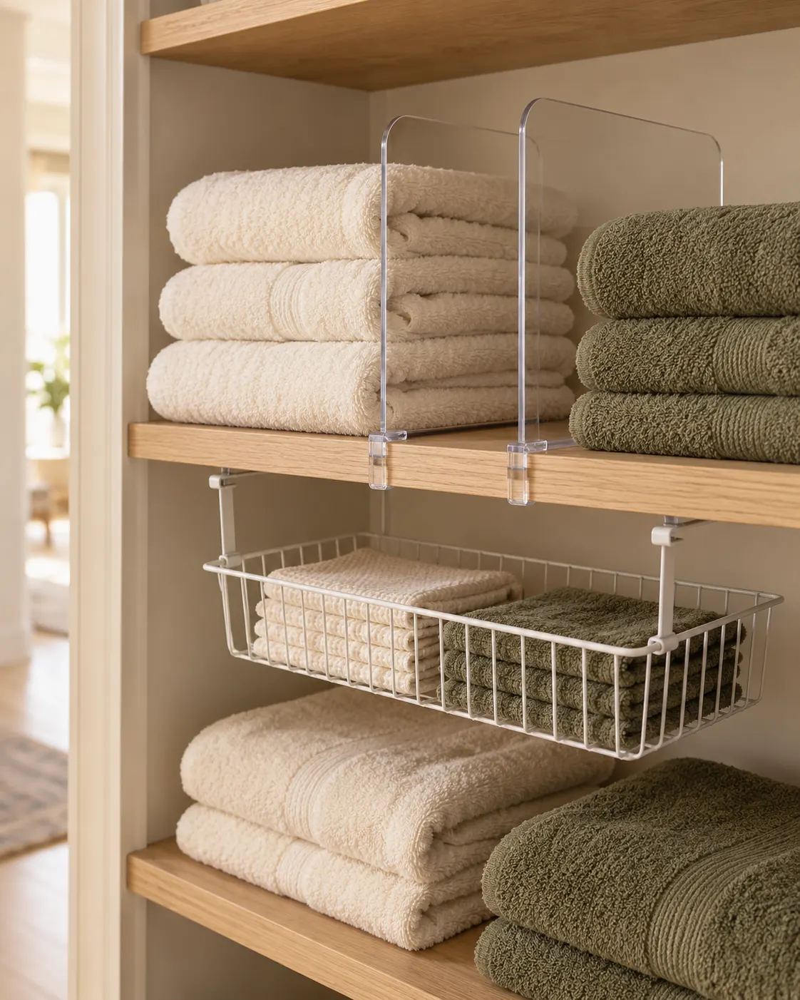
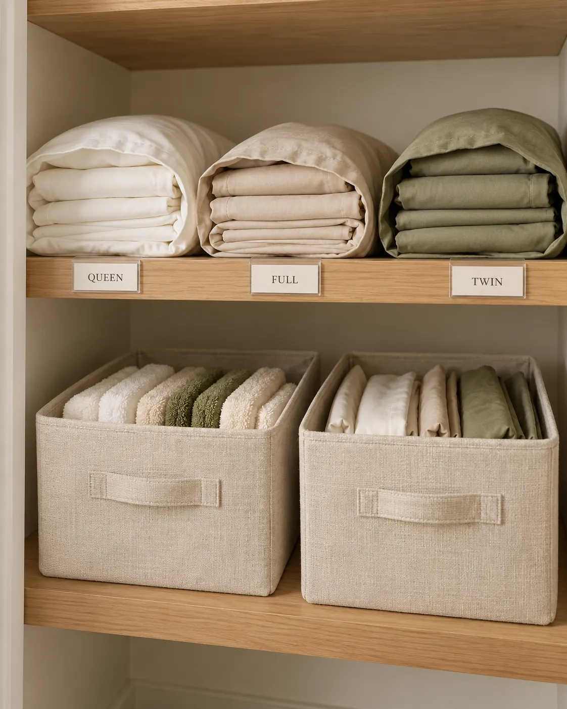
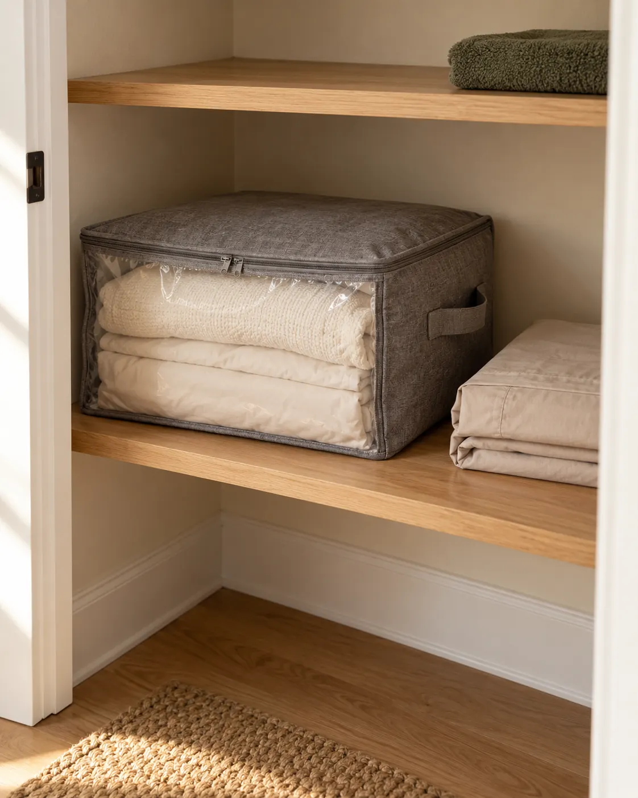

Make towels and matching sheet sets easier to find. Start with the linens your home uses, then create simple shelf zones that fit a small closet.
Keep it practicalStore what you useGroup by purposeFind matching setsMeasure firstChoose storage that fits
Easy-to-find linens, without crowded shelves.
This article contains affiliate links. As an Amazon Associate I earn from qualifying purchases. These are researched shopping options, not hands-on reviews. AI-generated illustrative photos may differ from linked products. Check current dimensions, price, seller and availability on Amazon.
BEFORE YOU ORGANIZE
Let your household’s laundry routine guide the layout.
A linen closet may hold towels for daily showers, spare sheets for a guest bed and a few occasional blankets. Give each category a clear home. You do not need a large matching collection or every organizer below to create a useful system.
If your home has no dedicated linen closet, adapt these ideas to a dry cabinet or an existing shelf. Check that containers fit before buying, and keep medicines and household chemicals in appropriate separate storage.
IDEA 01 · Keep only the linens your home uses
01
LINEN CLOSET IDEA 01
Keep only the linens your home uses
Start with one shelf and sort its contents into bath towels, hand towels, washcloths and bedding. Separate sheet sets that fit your current beds from mismatched or worn-out pieces. Choose an amount that supports your household’s laundry routine and guests, rather than filling every shelf simply because there is space.
Make it work: Measure shelf width, usable depth, the gap to the shelf above and the door opening. Check for a door hinge that reduces access. Clean the shelves and return only clean, completely dry linens. A small closet is easier to maintain when you can remove a stack without disturbing everything else.
IDEA 02 · Put daily towels within easy reach
02
LINEN CLOSET IDEA 02
Put daily towels within easy reach
Give the most accessible shelf to the towels you use most often. Keep hand towels together and bath towels in their own short stacks. Place guest linens and occasional items farther from the everyday zone, wherever they can still be reached safely. The exact shelf order should suit the people using the closet.
Make it work: Choose a consistent fold that fits the shelf depth, with folded edges facing out. Avoid tall stacks that lean forward. Simple paper labels such as Bath Towels, Hand Towels and Guest Linens are enough to explain the system; matching containers are optional.

IDEA 03 · Separate towel stacks with suitable dividers
03
LINEN CLOSET IDEA 03
Separate towel stacks with suitable dividers
A divider can stop two neighboring stacks from blending together. It is useful when a long solid shelf serves several categories, but smaller stacks or an existing basket may already solve the problem. Leave room to lift towels out instead of wedging them tightly between panels.
Make it work: Check the shelf material and thickness before choosing a clip-on divider. A divider designed for a solid shelf is not automatically suitable for wire shelving. Follow the maker’s fit range and never force the clip over a shelf that is too thick.
OPTION TO COMPARE
JOY DECOR clear acrylic shelf dividers, 12-pack
This listing specifies a maximum shelf thickness of 0.75 inch. The 12-pack may be more than a small closet needs; compare the available pack options and dimensions. The photo illustrates the layout, not the exact linked product.
View on Amazon →As an Amazon Associate I earn from qualifying purchases.

IDEA 04 · Bundle each sheet set inside its pillowcase
04
LINEN CLOSET IDEA 04
Bundle each sheet set inside its pillowcase
Fold the fitted sheet, flat sheet and any spare pillowcases into a bundle, then tuck them inside one pillowcase from the same set. When it is time to change a bed, the matching pieces come out together. This works without buying a dedicated sheet organizer and avoids leaving loose pillowcases scattered around.
Make it work: Label the shelf or bundle by the sizes your household actually uses: Twin, Full, Queen or King. A room name can help if several beds share the same size. Do not assume color alone identifies the set, and let every piece dry completely before bundling.
IDEA 05 · Use one small bin for loose extras
05
LINEN CLOSET IDEA 05
Use one small bin for loose extras
Loose washcloths, spare pillowcases and small guest linens are easier to retrieve from a modest bin than from the back of a deep shelf. Group one category per container and add a simple label. Reuse a shallow basket first, or choose a bin that lifts out comfortably through the closet door.
Make it work: Check the bin’s full height and the clearance needed to reach inside. Fabric cubes can take up more vertical space than expected. Keep them out of damp areas, avoid overfilling, and store only clean, dry textiles.
The linked cubes measure 10.5 × 10.5 × 11 inches. Confirm that an 11-inch-tall cube suits your shelf spacing. You do not need to use or buy six bins for one small shelf; the illustrative photo may differ.
View on Amazon →As an Amazon Associate I earn from qualifying purchases.
IDEA 06 · Use a shelf gap for light washcloths
06
LINEN CLOSET IDEA 06
Use a shelf gap for light washcloths
If there is a generous gap below a solid shelf, a hanging basket can give light washcloths their own place. Keep the basket within easy reach and test the layout with the closet door closed. It should not block towels or bedding on the shelf underneath.
Make it work: Check the support arms, shelf thickness, basket depth and the remaining shelf gap. Follow the maker’s installation and loading guidance. If the shelf shape or door does not allow a secure fit, use an ordinary bin instead of forcing the basket into place.
The listing gives individual dimensions of 11.25 inches deep, 12.5 inches wide and 5.5 inches high. Check the arm clearance and your shelf configuration before buying; the image is illustrative.
View on Amazon →As an Amazon Associate I earn from qualifying purchases.

IDEA 07 · Separate occasional bedding from daily linens
07
LINEN CLOSET IDEA 07
Separate occasional bedding from daily linens
Keep spare blankets or an occasional duvet cover together so they do not bury everyday towels. A labeled bag can help identify these items and move them as a group. Choose a dry storage location, check the textile care labels and leave enough room to retrieve the bag without dragging it across the shelf.
Make it work: A fabric storage bag is not a waterproof container or a substitute for drying laundry. Compare its filled size with the door opening and shelf depth. Do not overpack it, and use the maker’s handling guidance rather than assuming the handles can carry unlimited weight.
OPTION TO COMPARE
Lifewit zippered blanket and clothes storage bags with clear windows, 6-pack
A soft-sided option for occasional linens. Confirm the selected size, filled dimensions and quantity on Amazon; a six-pack may exceed your needs. The photo shows a generic layout and may differ from the linked bags.
View on Amazon →As an Amazon Associate I earn from qualifying purchases.
KEEP THE SYSTEM SIMPLE
Reset a shelf when clean laundry comes back.
Return each category to its zone, put the less-used set behind or beneath the one you reach for next, and check whether stacks still come out easily. If a shelf is crowded again, review the contents before adding another container.